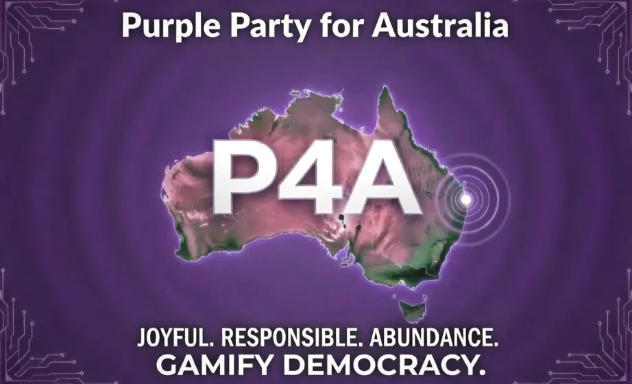
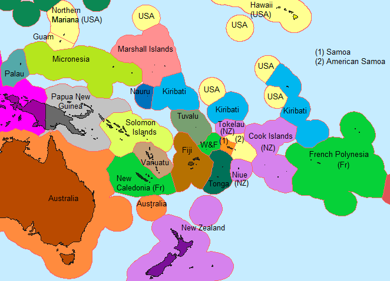
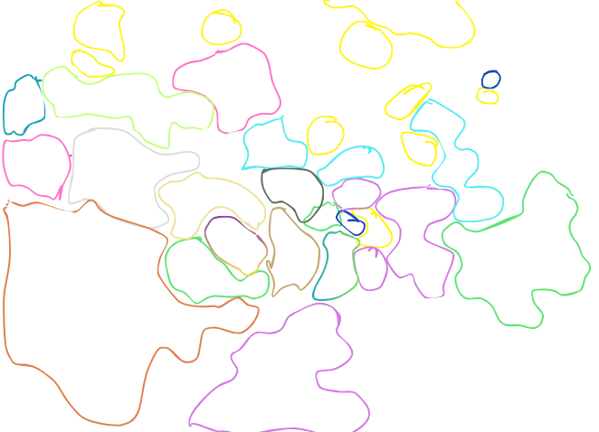

Sourced atlas
Oceania needs a map with receipts.
This page treats Oceania as a sourced research field, not a settled command map. The names and status notes below say what checked sources list, where those sources disagree, and what needs follow-up before anyone builds from it.
Clickable map
Start with the actual ocean.
The base image is a Wikimedia Commons PNG political map of Oceania with EEZ-style borders, now using a project sketch overlay to line up the interactive regions. Cards stay complete; map hover zones only appear where this base map gives a visible target.


Base map: Oceania political map.png, Wikimedia Commons, CC BY-SA 4.0. Original upload source says 31 January 2022; Commons current file timestamp checked as 1 February 2022. Coloured outlines: project calibration sketch, 3 July 2026.
{kind=link}
How to read it
Choose a layer, then hover the map.
Sources checked for this pass include the UN M49 page, Wikimedia Commons map metadata, Wikipedia's Oceania article and Oceania country/territory list, and DFAT's Pacific regional organisations page.
The wording stays deliberately provisional: sources list, sources describe, sources conflict, and follow-up is part of the work.
Atlas cards
Different source frames, different doors.
Use the filters to move between regional frames, sovereign or associated states, territories, and follow-up shelves. Open each card for names, source dates and caveats.
Receipts stay visible.
Research run: 2026-07-03, Australia/Brisbane. This page uses "sources checked say" language because the map, status and membership layers require follow-up before any stronger claim.
- Wikimedia Commons: Oceania political map.png - PNG map, CC BY-SA 4.0, original source date 31 January 2022, current Commons file timestamp checked as 1 February 2022. The coloured navigation outlines are a project calibration sketch, not a boundary source.
- United Nations Statistics Division M49 - checked source says M49 groupings are for statistical convenience and do not imply political affiliation or legal status.
- Wikipedia: Oceania - checked page says definitions vary; page last edited 22 June 2026 UTC when checked.
- Wikipedia: List of sovereign states and dependent territories in Oceania - checked for sovereign states, associated states and non-sovereign territory shelves.
- Wikipedia template: Sovereign states and dependent territories in Oceania - checked for the longer "in part", dependency and territory lists; page last edited 1 January 2026 UTC when checked.
- DFAT: Pacific islands regional organisations - checked for PIF and SPC membership wording, including associate-member wording for Tokelau, Wallis and Futuna, Guam and American Samoa.